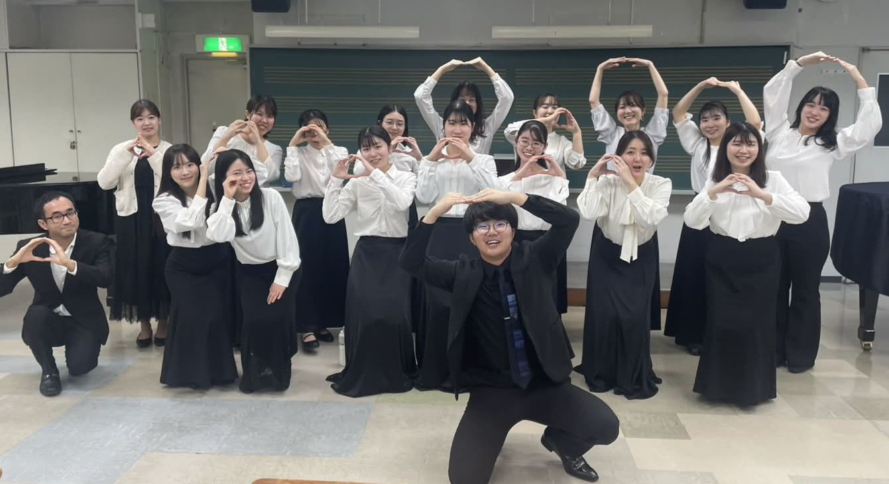
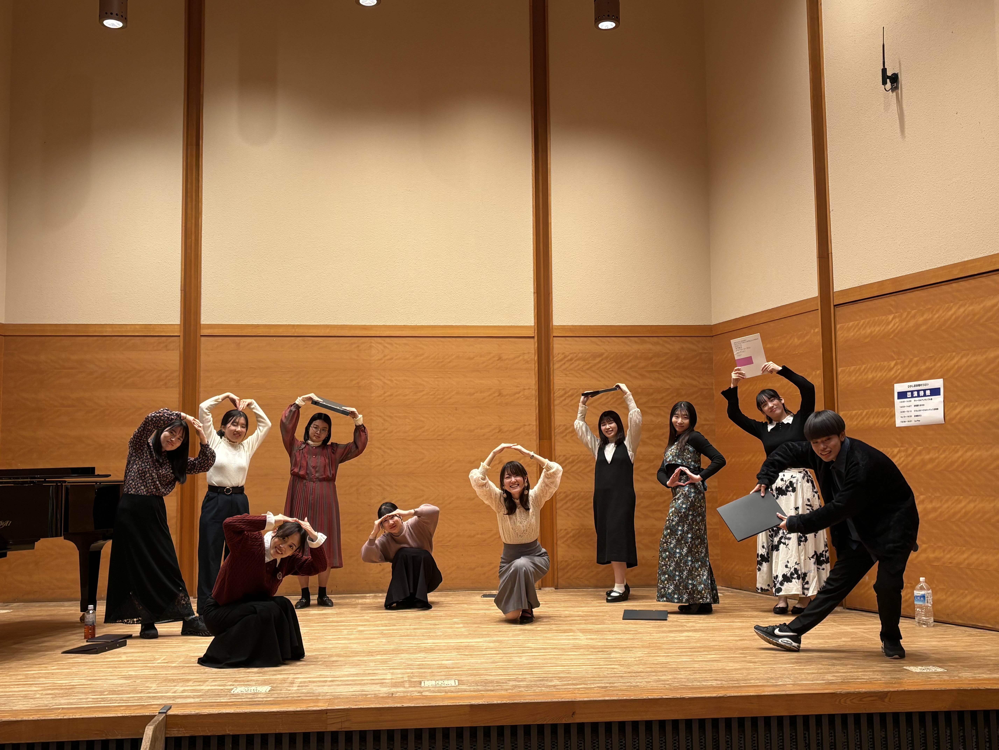
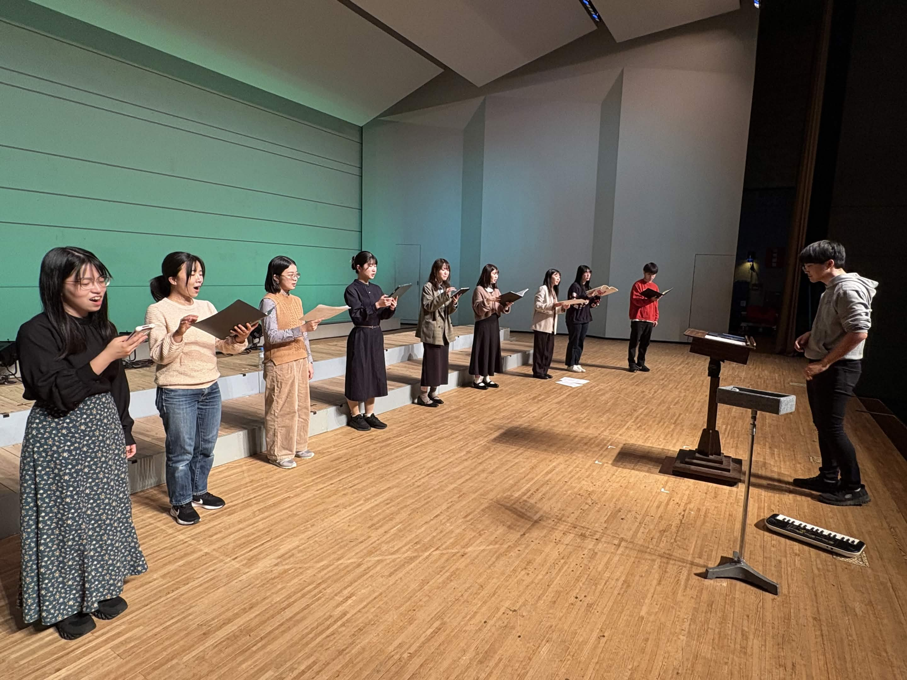

たまたま集まった人たちの輪。 ゆるく楽しく、でも本気で歌う女声合唱団です。
合唱団たまのわは、広島市内で活動する女声合唱団です。 「たまのわ」とは「たまたま集まった人たちの輪」の略。 2024年のヴォーカル・アンサンブル・コンテストひろしまに出場するために結成し、 打ち上げのお酒の流れで常設化が決まりました。
名前の由来の通り、個性豊かなメンバーが来れるときに集まり、 「ゆるく楽しく長続きする」女声合唱を目指して活動しています。 "たまたま集まった"人たちで、その場でしかできない演奏を大切にしています。



一緒に歌いませんか？
月2回・主に日曜日10:00〜13:00
広島市内の公民館・文化センター（新白島・横川・広島駅周辺）
社会人 1,000円 / 学生 500円体験・見学は無料！
女声合唱（ソプラノ・アルト）初心者〜上級者まで大歓迎
楽しみながら上手くなる、上手くなれば楽しくなる。女声合唱を楽しみたい気持ちが少しでもあれば、ぜひ来てみてください！